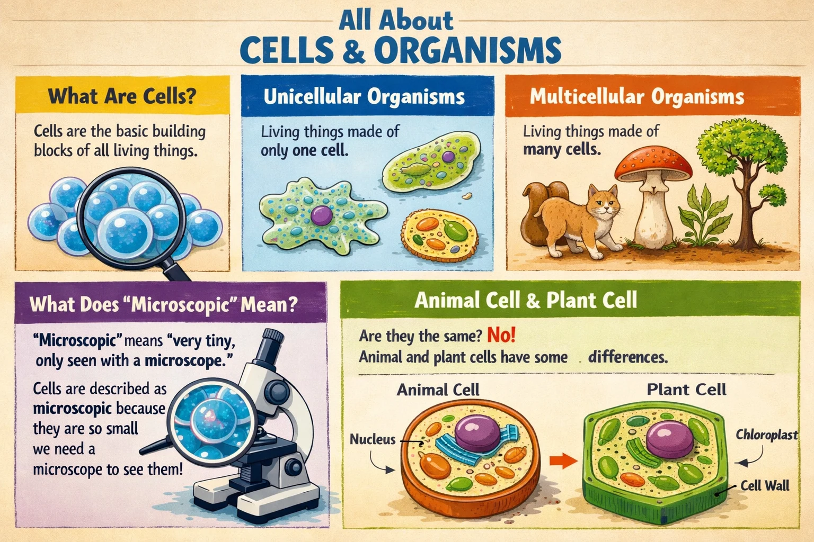
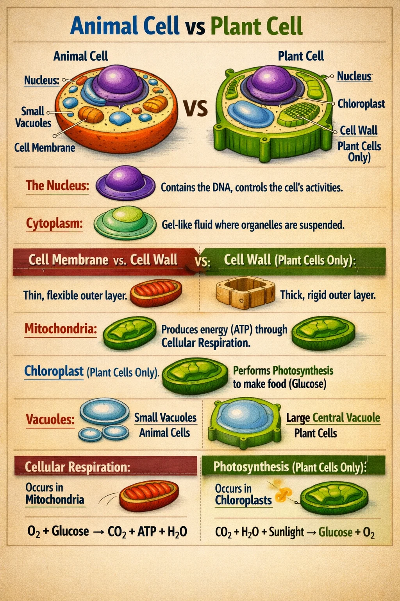
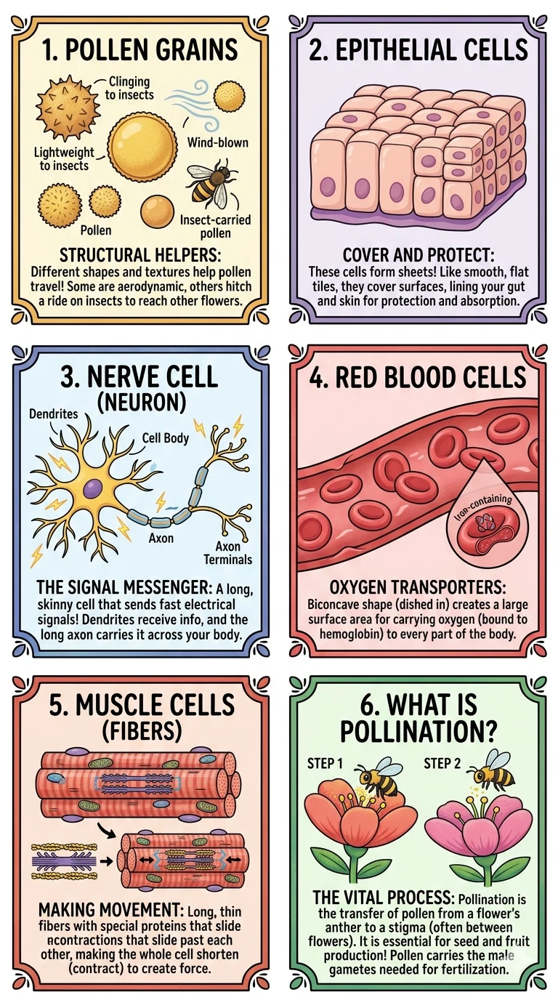
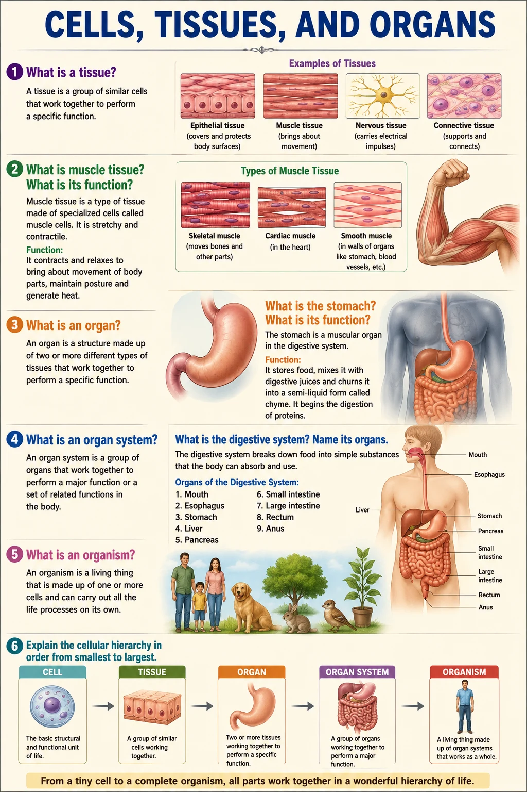

Chapter Overview
Key skills you will develop by the end of Chapter 1: Cellular Organization.
General Science: Cellular Organization
Complete chapter notes with all diagrams, cell comparisons, specialized cells, and vocabulary — PDF format
Please note: The content on this page is a concise preview of the chapter. The complete notes, including all detailed explanations, diagrams, worked examples, and exam-style questions, are available in the PDF. We strongly encourage you to download the PDF for the full learning material.
Chapter Diagrams
High-quality illustrated diagrams from W.H. Academy Class 6 Science notes.




What Are Cells?
The basic building blocks of all living things.
Introduction to Cells
1. What are cells? What are unicellular and multicellular organisms?
Unicellular organisms — made up of only one single cell. Example: Bacteria.
Multicellular organisms — made up of millions of cells joined together. Examples: most animals and plants.
2. What jobs do all animal and plant cells perform?
1. Take in food
2. Release energy
3. Get rid of waste
4. Grow
5. Reproduce
Animal vs. Plant Cell Structure
Similarities, differences, and the function of each organelle.
Shared Organelles (Both Cells)
1. What is the nucleus? Why is it called the control center?
2. What is cytoplasm? What is the cell membrane?
Cell Membrane — a thin skin around the outside of the cell. It prevents cell contents from escaping but allows substances like water and small molecules to cross in and out.
3. What are mitochondria? Why are they called the powerhouse of the cell?
Plant-Only Organelles
4. What is a cell wall? What is it made of?
5. What are chloroplasts? What is the role of chlorophyll?
Animal cells do not have chloroplasts because animals get their energy from the food they eat, not by making it themselves.
6. What is a vacuole? How is it different in plant and animal cells?
Plant cells — one large central vacuole filled with cell sap (helps keep the plant firm)
Animal cells — many small vacuoles that store water, air, and food
7. List FOUR similarities and THREE differences between plant and animal cells.
| Feature | Animal Cell | Plant Cell |
|---|---|---|
| Nucleus | ✅ Present | ✅ Present |
| Cytoplasm | ✅ Present | ✅ Present |
| Cell Membrane | ✅ Present | ✅ Present |
| Mitochondria | ✅ Present | ✅ Present |
| Cell Wall | ❌ Absent | ✅ Present (cellulose) |
| Chloroplasts | ❌ Absent | ✅ Present |
| Vacuole | Many small | One large central |
Specialized Cells & Biological Hierarchy
How cells adapt for specific jobs, and organization from cells to organs.
Special Cells for Special Jobs
1. What are nerve cells? How are they adapted?
2. What are red blood cells? What are muscle cells?
Muscle Cells — long and thin with pointed ends. This shape helps the cells slide over each other easily as muscles contract and relax to cause movement.
3. What are pollen grains and epithelial cells?
Epithelial Cells — thin and flat, found in layers covering surfaces such as the skin, lining of blood vessels, and the alimentary canal. They help with protection and absorption.
4. How are cells organized into tissues and organs?
Cell → the basic unit (e.g. muscle cell)
Tissue → a group of similar cells working together (e.g. muscle tissue)
Organ → a group of different tissues working together for one function (e.g. the heart)
Organ System → organs working together (e.g. circulatory system)
Organism → the complete living thing
Key Terms
Important vocabulary for Chapter 1: Cellular Organization.
| Term | Simple Meaning |
|---|---|
| Cell | The basic unit and building block of all living things |
| Unicellular | Made up of only one cell (e.g. bacteria) |
| Multicellular | Made up of millions of cells joined together (e.g. animals, plants) |
| Microscopic | Too tiny to be seen without a microscope |
| Nucleus | The control center of the cell; contains genetic information; controls all cell activities |
| Cytoplasm | A jelly-like fluid inside the cell where chemical reactions take place |
| Cell membrane | Thin skin around the cell that controls what enters and leaves |
| Mitochondria | Where energy is released through cellular respiration; called the powerhouse of the cell |
| Cell wall | A firm outer coating of cellulose; found only in plant cells; helps keep shape |
| Chloroplast | Found only in plant cells; contains chlorophyll and is used for photosynthesis |
| Chlorophyll | The green chemical in chloroplasts that helps plants use sunlight to make food |
| Vacuole | A space inside the cell storing water, food, or waste; plants have one large one |
| Photosynthesis | Process by which green plants use sunlight to make their own food |
| Cellular respiration | Process in which glucose is broken down in mitochondria to release energy |
| Tissue | A group of similar cells working together to perform the same function |
| Organ | A group of different tissues working together to perform a specific function |
| Alimentary canal | The long tube from mouth to end of digestive system; lined with epithelial cells |
Want Full Chapter Notes & Expert Guidance?
Enroll with W.H. Academy for complete chapter-by-chapter notes, personalized tutoring, and exam preparation by M. Rehan Safdar.